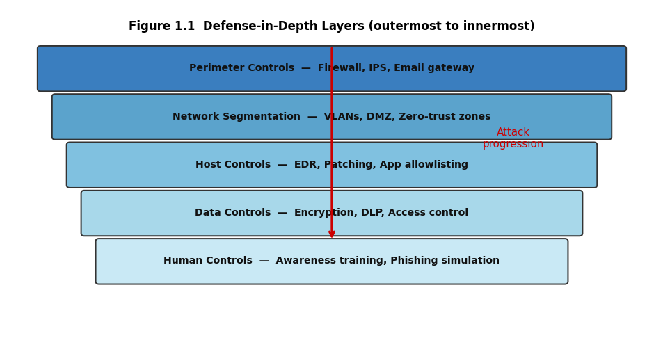

1. Chapter 1: Introduction to Cybersecurity#
“The only truly secure system is one that is powered off, cast in a block of concrete, and sealed in a lead-lined room with armed guards.” Gene Spafford
1.1. Learning Objectives#
After completing this chapter, you will be able to:
Define cybersecurity and distinguish it from information security and computer security.
State the CIA triad and explain each property with a real-world example.
Identify the four elements of an attack: threat, vulnerability, attack surface, and exploitation.
Explain the adversary model: who attacks, why, and with what capability.
Describe the NIST Cybersecurity Framework five functions and map them to defensive practice.
Apply the ALE formula to quantify risk in monetary terms.
Explain the defense-in-depth principle and layered security.
Distinguish security controls by type: preventive, detective, and corrective.
1.2. Key Terms#
Cybersecurity: the practice of protecting systems, networks, and programs from digital attacks.
CIA triad: Confidentiality, Integrity, Availability; the three core security properties.
Threat: any circumstance or event with potential to harm an asset.
Vulnerability: a weakness that a threat can exploit.
Attack surface: the sum of all exploitable entry points in a system.
Exploit: code or technique that takes advantage of a vulnerability.
Risk: the probability that a threat will exploit a vulnerability, multiplied by impact.
ALE: Annualized Loss Expectancy; expected monetary loss per year.
SLE: Single Loss Expectancy; loss from one occurrence.
ARO: Annualized Rate of Occurrence; how often an event happens per year.
Defense in depth: the principle of using multiple, overlapping security layers.
NIST CSF: NIST Cybersecurity Framework; a voluntary risk management framework.
APT: Advanced Persistent Threat; a sophisticated, long-term attacker.
1.3. What Cybersecurity Protects#
Cybersecurity is the discipline of protecting digital assets from unauthorized access, modification, disruption, and destruction. It spans technical controls (firewalls, encryption), procedural controls (policies, training), and physical controls (locked server rooms, badge access), all operating together because an adversary will seek the weakest link regardless of category.
1.3.1. Information Assets and Their Value#
Every organization holds assets whose compromise carries a cost: customer records, intellectual property, operational data, and system availability. The first step in any security program is an asset inventory that answers two questions: what do we have, and what would it cost if it were disclosed, altered, or made unavailable? Without this inventory, no rational prioritization is possible.
1.3.1.1. Tangible and Intangible Costs#
Tangible costs include incident response fees, regulatory fines, notification costs, and lost revenue during downtime. Intangible costs include reputational damage, customer churn, and loss of competitive advantage. Major breach settlements have run into hundreds of millions of dollars, demonstrating that information security failures carry board-level consequences.
1.3.2. Cybersecurity Versus Adjacent Disciplines#
Information security is the broader field covering all forms of information protection including paper records. Computer security focuses on hardware and software systems. Cybersecurity emphasizes the networked, adversarial context where attackers actively probe for weaknesses. In practice the terms overlap, but the networked-adversarial framing of cybersecurity shapes its methodology.
1.4. The CIA Triad#
The CIA triad is the foundational model for describing what a security control is trying to protect. Every security requirement maps to one or more of its three properties.
1.4.1. Confidentiality#
Confidentiality ensures that information is accessible only to those authorized to access it. Mechanisms include encryption, access controls, classification policies, and need-to-know principles. A breach of confidentiality occurs when an unauthorized party reads data: a stolen database of customer records, an insider leaking trade secrets, or network eavesdropping on unencrypted traffic.
1.4.1.1. Data Classification#
Most organizations classify data into tiers such as public, internal, confidential, and restricted. Classification drives encryption requirements, retention rules, and access control policies. HIPAA- covered health information and PCI DSS-covered cardholder data are examples of classifications that carry specific regulatory handling requirements.
1.4.2. Integrity#
Integrity ensures that information is accurate and has not been altered by unauthorized parties. Mechanisms include cryptographic hashes, digital signatures, version control, and audit logs. A breach of integrity might be a financial record altered to redirect funds, a software package modified to include malware, or a database table modified to erase evidence.
1.4.2.1. The Need for Authenticated Integrity#
A hash alone detects accidental corruption; only a digital signature or HMAC proves that an authorized party created the data and that it has not changed since. Log files that an attacker can edit are worthless as evidence; append-only, integrity-protected logs are a foundational forensic requirement.
1.4.3. Availability#
Availability ensures that systems and data are accessible to authorized users when needed. Mechanisms include redundancy, load balancing, backup and recovery, and rate limiting. A breach of availability is a Distributed Denial of Service (DDoS) attack overwhelming a server, a ransomware attack encrypting files, or a power failure bringing down an unprotected data center.
1.4.3.1. The DAD Triad#
The DAD triad (Disclosure, Alteration, Destruction) maps attacks to the three CIA properties: disclosure attacks break confidentiality, alteration attacks break integrity, and destruction or denial attacks break availability. This mapping frames the defender’s job: understand what adversaries are trying to do, then choose controls that prevent, detect, or limit each class.
1.5. Adversaries and Threat Actors#
Understanding who attacks informs how to defend. Threat actors differ by motivation, capability, and patience.
1.5.1. Nation-State Actors#
Nation-state actors (APTs) conduct espionage, intellectual-property theft, and sabotage on behalf of governments. They have large budgets, access to zero-day vulnerabilities, and the patience to maintain persistent access for months or years before taking action. The Stuxnet operation against Iranian centrifuges and the SolarWinds supply-chain campaign are documented examples. APTs are sophisticated but not unstoppable; they still rely on initial access vectors such as spear phishing and credential theft.
1.5.1.1. Distinguishing Espionage from Sabotage#
Espionage actors seek intelligence without revealing their presence; they avoid detection for as long as possible. Sabotage actors may destroy data or physical equipment. Ransomware actors are a hybrid: they exfiltrate before encrypting to maintain a second extortion lever. Knowing the actor type helps defenders anticipate the likely goal and triage accordingly.
1.5.2. Criminal Organizations#
Criminal organizations are primarily motivated by financial gain. Their operations are run at scale: phishing kits rented as a service, ransomware-as-a-service platforms, and credential markets where stolen usernames and passwords are bought and sold. The return-on-investment focus means they prefer high-yield, low-effort attacks against targets with weak hygiene over sophisticated targeted operations.
1.5.3. Insider Threats#
Insiders are employees or contractors who abuse legitimate access. They may be malicious (deliberate data theft, sabotage), negligent (accidentally misconfiguring a cloud bucket, losing an unencrypted laptop), or coerced (blackmailed into leaking data). Insider threats are among the most damaging because they bypass perimeter controls entirely. Controls include least-privilege access, separation of duties, behavior analytics, and off-boarding procedures.
1.5.4. Hacktivists and Script Kiddies#
Hacktivists are politically or ideologically motivated and often focus on public-facing disruption (website defacements, DDoS) to generate publicity. Script kiddies use tools written by others without deep understanding, posing a risk to unpatched systems even if their sophistication is low. Sheer volume of low-sophistication attacks means basic hygiene, patching and strong passwords, blocks the majority.
1.6. Vulnerability, Threat, and Risk#
Security practitioners must be precise about these three terms because each demands a different response.
1.6.1. Defining and Finding Vulnerabilities#
A vulnerability is a weakness in a system, process, or control that could be exploited to cause harm. Common sources include software bugs (buffer overflows, injection flaws), misconfigurations (open ports, default credentials), design flaws, and human error. The CVE database maintained by MITRE is the global registry of publicly known vulnerabilities, each assigned a CVE identifier and a CVSS score that quantifies severity on a 0-10 scale.
1.6.1.1. The Attack Surface#
The attack surface is the total set of points at which an attacker could try to enter or extract data. It includes network services, user interfaces, APIs, third-party libraries, and human users. Reducing the attack surface (disabling unused services, removing unnecessary software, applying least-privilege) is the single most effective risk-reduction strategy because it eliminates entire categories of vulnerability before they can be exploited.
1.6.2. The Risk Formula#
Risk is not merely the presence of a vulnerability; it is the combination of likelihood and impact. The quantitative formula most widely used in security economics is:
SLE = Asset Value × Exposure Factor
ALE = SLE × Annualized Rate of Occurrence
ROSI (Return on Security Investment) compares the reduction in ALE from a control against the cost of the control: if the benefit exceeds the cost, the control is economically justified.
1.7. The NIST Cybersecurity Framework#
The NIST CSF 2.0 [NationalIoSaTechnology24] organizes security practices into six functions that together describe a complete risk-management lifecycle.
1.7.1. Govern#
The Govern function, new in CSF 2.0, establishes the organizational context: mission, risk appetite, policies, roles, and accountability. Governance is the prerequisite for everything else because resources cannot be allocated rationally without clarity on what is being protected and why.
1.7.2. Identify#
The Identify function builds understanding of assets, risks, and dependencies. Without an accurate asset inventory, no organization knows its attack surface. Identify activities include asset management, risk assessment, and supply-chain risk analysis.
1.7.3. Protect#
The Protect function implements safeguards: access controls, encryption, patching, security awareness training, and data protection. Protection is the largest operational investment and the area where most compliance frameworks focus.
1.7.4. Detect#
The Detect function covers continuous monitoring and anomaly detection. Attackers who penetrate protection controls must be detected before they achieve their objectives. Mean Time to Detect (MTTD) is the key metric; the longer an attacker dwells undetected, the greater the damage.
1.7.4.1. Security Monitoring Stack#
A modern detect capability combines endpoint detection and response (EDR), security information and event management (SIEM), network traffic analysis, and threat intelligence feeds. Correlation across these sources surfaces patterns that no single tool catches alone.
1.7.5. Respond#
The Respond function covers what happens after detection: containment, eradication, and communication. An undocumented, improvised response wastes time and destroys evidence. Every organization above a minimal size should maintain a tested incident response plan.
1.7.6. Recover#
The Recover function restores systems and services and incorporates lessons learned. Recovery planning includes backup verification, business continuity testing, and post-incident review. Recovery Time Objective (RTO) and Recovery Point Objective (RPO) are the service-level metrics that drive backup strategy.
1.8. Defense in Depth and Security Controls#
1.8.1. The Defense-in-Depth Principle#
Defense in depth places multiple independent controls along every attack path so that the failure of any single control does not produce a breach. The layers include perimeter (firewalls, network segmentation), host (endpoint protection, patching, application allowlisting), data (encryption, access controls), and human (training, phishing simulation). Each layer slows an attacker and creates detection opportunities.
1.8.2. Control Types#
Security controls are classified by what they do when activated:
Preventive controls stop an attack before it succeeds: firewalls, access control lists, encryption, locked doors.
Detective controls identify that an attack has occurred or is in progress: IDS, SIEM, audit logs, security cameras.
Corrective controls restore a system to a known-good state after an incident: backup restoration, patch deployment, account lockout.
Deterrent controls discourage attack by raising the perceived cost: warning banners, visible cameras, prosecution of violators.
Compensating controls provide an alternative when the primary control is impractical: an air-gapped network segment compensating for an unpatched industrial controller.
1.8.2.1. Defense-in-Depth Example#
A phishing email reaches a user. The email filter (preventive) did not catch it. The user clicks a link and lands on a credential-harvesting page. The browser’s safe-browsing warning (detective) fires. The user proceeds and enters credentials. Multi-factor authentication (preventive) blocks the login. The attacker tries the credential elsewhere; a password-reuse monitor (detective) alerts. Each layer independently reduces the probability of full compromise.
1.9. Why This Matters#
Cybersecurity is a prerequisite for every digital service society depends on: banking, healthcare, power grids, communication, and government services all rest on systems that can fail if security is neglected. Practitioners who understand the threat landscape, the CIA triad, and the risk quantification tools in this chapter are equipped to make defensible, economically grounded security decisions rather than reacting to the most recent headline.
1.10. News in Focus#
Ransomware campaigns targeting critical infrastructure have illustrated that availability failures carry consequences far beyond IT disruption. Documented incidents involving hospitals (patient diversions), fuel pipelines (supply disruptions), and water utilities (control system access) demonstrate that the CIA triad applies to physical-world outcomes, not just data. Each of these incidents involved known, preventable vulnerabilities including unpatched systems, weak credentials, and absent network segmentation.
# Chapter 1 -- Worked Example: ALE calculation and defense-in-depth visualization
import matplotlib
matplotlib.use('Agg')
import matplotlib.pyplot as plt
import matplotlib.patches as mpatches
from io import BytesIO
from IPython.display import display, Image
# ── ALE numerical example ─────────────────────────────────────────────────────
asset_value = 500_000 # customer database: $500 k
exposure_factor = 0.40 # 40% of asset value lost per breach on average
aro = 0.30 # 30% annual probability of a breach
sle = asset_value * exposure_factor
ale = sle * aro
control_cost = 20_000 # annual cost of a monitoring + patching programme
ale_with_control = ale * 0.15 # control reduces expected loss by 85%
benefit = ale - ale_with_control
rosi = (benefit - control_cost) / control_cost * 100
print("=== Annualized Loss Expectancy (ALE) ===")
print(f" Asset value : ${asset_value:>12,.0f}")
print(f" Exposure factor : {exposure_factor:.0%}")
print(f" Single Loss (SLE) : ${sle:>12,.0f}")
print(f" Annual rate (ARO) : {aro:.0%}")
print(f" ALE (no control) : ${ale:>12,.0f}")
print(f" ALE (with control) : ${ale_with_control:>12,.0f}")
print(f" Control annual cost : ${control_cost:>12,.0f}")
print(f" Annual benefit : ${benefit:>12,.0f}")
print(f" ROSI : {rosi:>12.1f}%")
print(f" Decision: {'JUSTIFIED' if rosi>0 else 'NOT justified'}")
# ── Defense-in-depth layers visualization ─────────────────────────────────────
fig, ax = plt.subplots(figsize=(10, 5))
ax.axis('off'); ax.set_xlim(0,10); ax.set_ylim(0,6)
layers = [
("Perimeter Controls", "Firewall, IPS, Email gateway", "#3a7ebf", 4.5),
("Network Segmentation", "VLANs, DMZ, Zero-trust zones", "#5ba3cc", 3.6),
("Host Controls", "EDR, Patching, App allowlisting", "#80c1e0", 2.7),
("Data Controls", "Encryption, DLP, Access control", "#a8d8ea", 1.8),
("Human Controls", "Awareness training, Phishing simulation", "#c9e9f5", 0.9),
]
for label, detail, color, y in layers:
width = 9.0 - (4.5 - y) * 0.5
x = (10 - width) / 2
ax.add_patch(mpatches.FancyBboxPatch((x, y), width, 0.75,
boxstyle="round,pad=0.05", facecolor=color, edgecolor="#333", lw=1.2))
ax.text(5, y + 0.38, f"{label} — {detail}",
ha="center", va="center", fontsize=8.5, fontweight="bold", color="#111")
ax.text(5, 5.6, "Figure 1.1 Defense-in-Depth Layers (outermost to innermost)",
ha="center", fontsize=10, fontweight="bold")
ax.annotate("", xy=(5, 5.3), xytext=(5, 1.65),
arrowprops=dict(arrowstyle="<-", color="#c00", lw=2.0))
ax.text(7.8, 3.4, "Attack\nprogression", color="#c00", fontsize=9, ha="center")
_buf = BytesIO()
plt.savefig(_buf, format="png", dpi=120, bbox_inches="tight")
plt.close()
_buf.seek(0)
display(Image(data=_buf.read()))
print("Figure 1.1 rendered.")
=== Annualized Loss Expectancy (ALE) ===
Asset value : $ 500,000
Exposure factor : 40%
Single Loss (SLE) : $ 200,000
Annual rate (ARO) : 30%
ALE (no control) : $ 60,000
ALE (with control) : $ 9,000
Control annual cost : $ 20,000
Annual benefit : $ 51,000
ROSI : 155.0%
Decision: JUSTIFIED

Figure 1.1 rendered.
1.11. Review Questions (MCQ)#
Q1. Which CIA property is violated when ransomware encrypts a hospital’s patient files? A. Confidentiality only B. Integrity only C. Availability (and potentially integrity) D. None
Q2. An employee accidentally emails a customer list to the wrong recipient. Which property fails? A. Availability B. Confidentiality C. Integrity D. Authentication
Q3. The formula ALE = SLE x ARO produces a value measured in: A. Risk units B. Dollars per year C. Probability D. Patch count
Q4. The NIST CSF 2.0 function added in the 2024 revision is: A. Identify B. Detect C. Govern D. Protect
Q5. Defense in depth is best described as: A. Using the most expensive control available B. Multiple overlapping controls so single failure does not cause breach C. Patching all systems within 24 hours D. Encrypting all data at rest
Q6. A camera in a data centre is primarily which type of control? A. Preventive B. Corrective C. Detective and deterrent D. Compensating
Q7. A script kiddie differs from an APT actor primarily in: A. Motivation B. Technical sophistication and resources C. Use of phishing D. Targeting of infrastructure
Q8. The attack surface of an application is reduced by: A. Buying a more expensive server B. Disabling unused services and applying least-privilege C. Adding more logging D. Increasing encryption key size
Q9. SLE = \(80,000 and ARO = 0.25. What is the ALE? A. \)80,000 B. \(320,000 C. \)20,000 D. $200,000
Q10. Which NIST CSF function covers backup and disaster recovery? A. Identify B. Protect C. Respond D. Recover
Answers: Q1 C, Q2 B, Q3 B, Q4 C, Q5 B, Q6 C, Q7 B, Q8 B, Q9 C, Q10 D.
1.12. Lab Assignment#
Part A – Asset inventory: List 10 digital assets a small university department would hold (examples: student records, research data, email server). For each, assign a rough asset value, an exposure factor if breached, and an ARO. Compute SLE and ALE for each.
Part B – Threat actor mapping: For the same department, identify two likely threat actors from the taxonomy in this chapter. For each actor, describe their probable motivation, preferred attack vector, and one preventive and one detective control that would be effective against them.
Part C – NIST CSF gap analysis: Using the six CSF functions as headings, list at least two activities the department currently performs (or should perform) under each function. Mark activities that are missing as gaps.
Part D – Defense-in-depth design: Draw or describe a five-layer defense-in-depth model for the department’s network, naming one specific control at each layer and one detective mechanism that would alert if that layer were breached.
1.13. References#
National Institute of Standards and Technology. The nist cybersecurity framework (csf) 2.0. Technical Report NIST CSWP 29, U.S. Department of Commerce, 2024. doi:10.6028/NIST.CSWP.29.